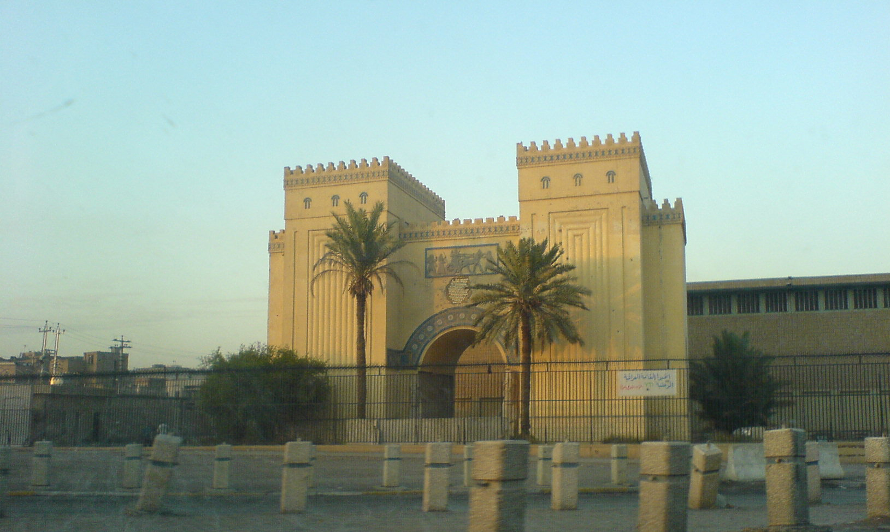
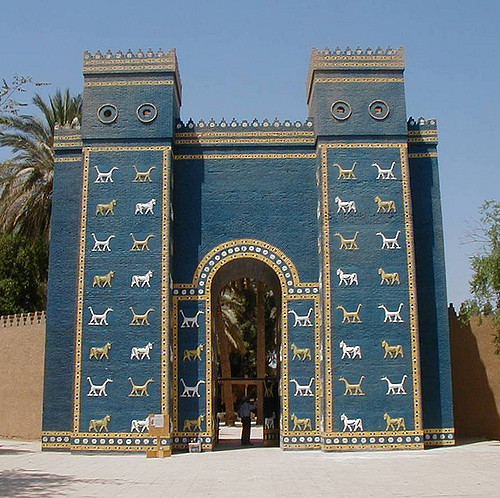

Ирак
Ирак — государство на Ближнем Востоке, находящееся в Месопотамской низменности, в долине рек Тигр и Евфрат. Первоначально название Ирака происходит от шумерского названия города-государства Урука (от "ур" - город).
Общественный быт в значительной мере определяется исламскими традициями и установлениями (шариат, согласно Конституции), тем не менее, Ирак можно считать довольно лояльным в плане общественных устоев: многие исламские законы, к которым, например, относится ношение хиджаба, являются желательными к исполнению, не необязательными. Сохраняются и восходящие к доисламским временам календарные обряды, связанные с началом полевых работ, уборкой урожая, остригом овец и т. д.
Отличается значительным этнокультурным разнообразием. Около 95 % населения исповедует ислам, остальные 5 % принадлежат в основном к ассирийской церкви Востока. Среди мусульман также наблюдается неоднородность: на западе преимущественно живут мусульмане-сунниты, в то время как на востоке – мусульмане-шииты. В целом, несмотря на мнение отдельных людей и влияние пропаганды, острых противоречий данные группы не имеют.
В недавнем прошлом Ирак пережил войну, однако люди сумели сохранить свое гостеприимство к иностранцам. Тем не менее, во избежание неприятностей рекомендуется быть внимательным к фотографированию различных зданий, крепостей, фортовых сооружений: некоторые из них являются действующими военными объектами.
Иракские музеи уникальны. Так, Иракский музей в столице страны, Багдаде, до сих пор является центром научных исследований по истории и археологии, а также хранилищем неповторимой археологической коллекции. Библиотека при этом музее – одна из крупнейших в стране.

Одной из главных и самых известных достопримечательностей является город древности Вавилон. Вавилон поражал воображение иноземцев своей архитектурой. Ворота Иштар в определенном роде являются символом Ирака. В Вавилоне располагалось одно из семи чудес света — висячие сады Семирамиды, которые были сооружены на искусственных террасах, где высаживались пальмы, фиги и другие деревья. Царица Семирамида на самом деле не имела к ним никакого отношения. Сады построил Навуходоносор для своей жены Нитокрис, страдавшей от душного климата Месопотамии, вдали от родных гор и лесов, откуда она была родом. Вавилонская царица Нитокрис снискала себе славу благодаря строительству плотин, оросительных каналов и большого разводного моста, соединявшего две части столицы. Мост был сложен из больших необтёсанных камней, скреплённых специальным раствором и свинцом. Его средняя часть, сделанная из брёвен, на ночь разбиралась.

Таким образом, Ирак, являясь доступной страной для иностранцев, полюбится многим тем, кто ценит культурное и духовное разнообразие, имеет желание разобраться в арабском мышлении и исламском мире во всей его совокупности.